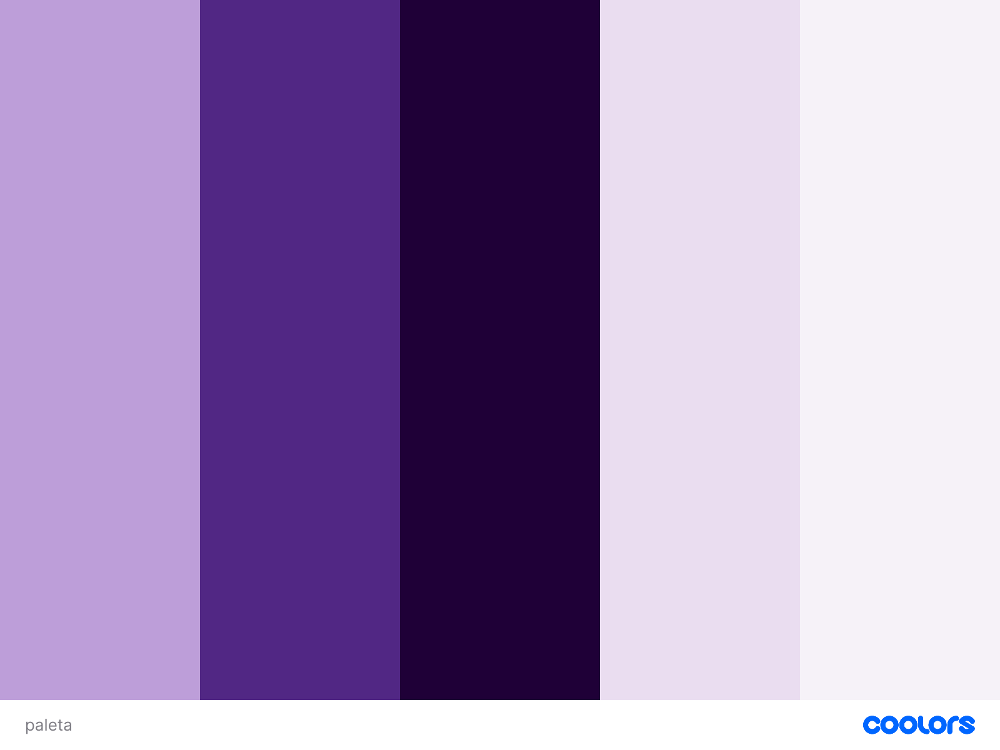
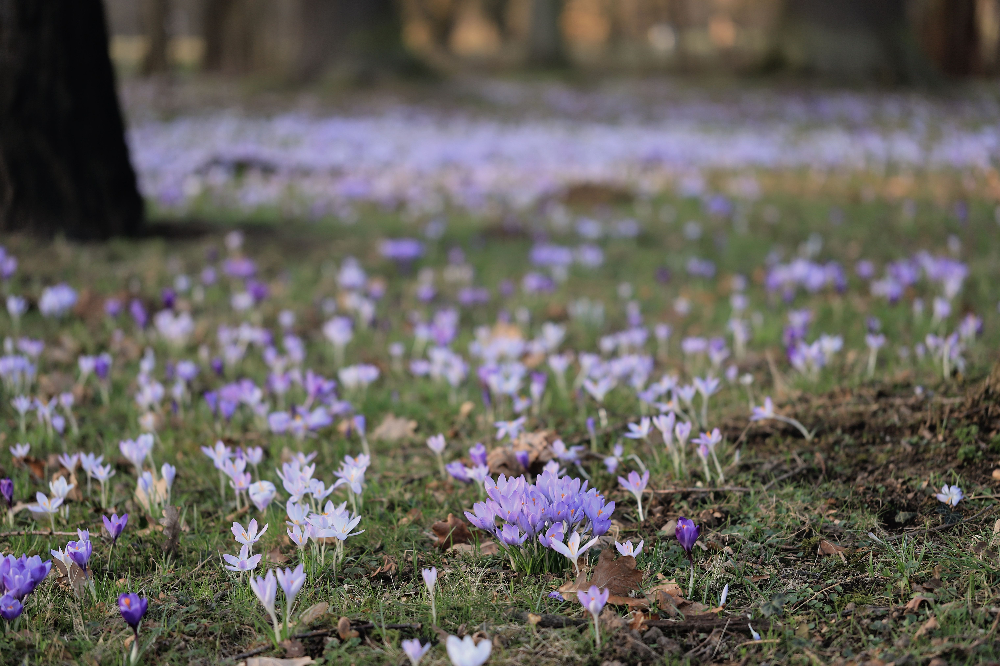
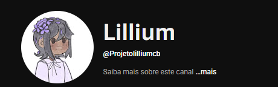
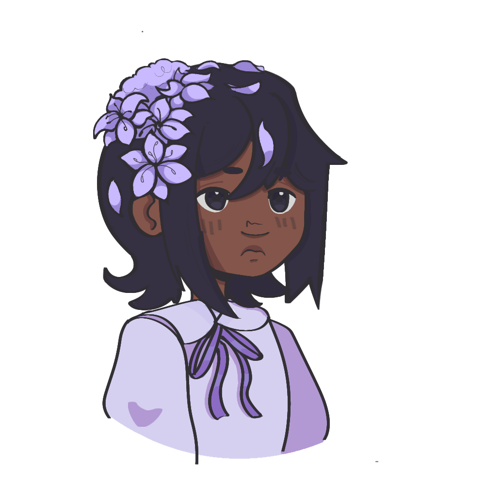
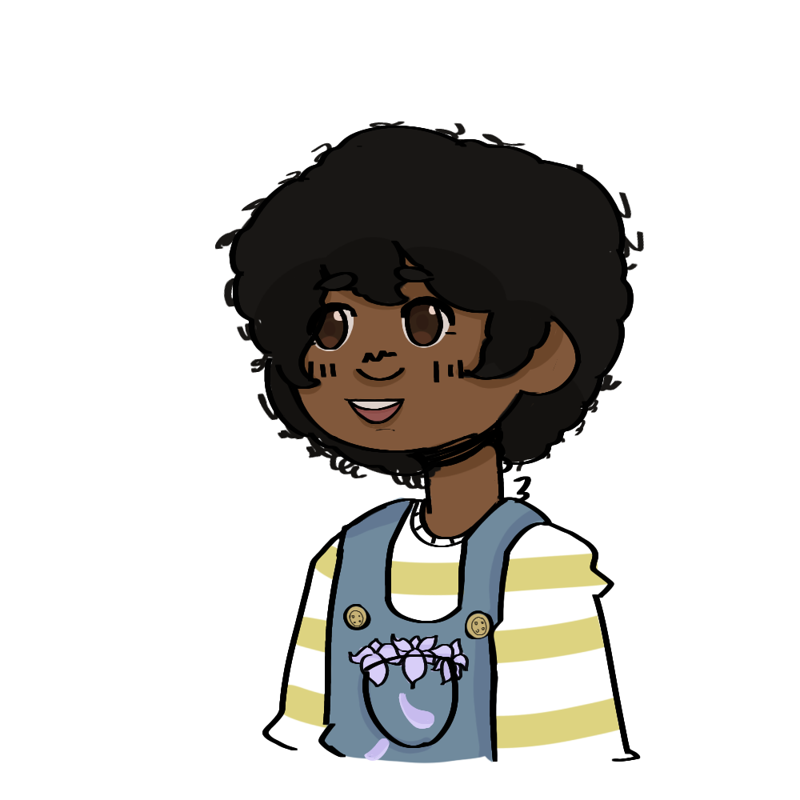

Paleta
Pensada na experiência, suas cores remetem a tranquilidade, espiritualidade, transformação e luta feminina.
Acompanhe o processo de criação do projeto em detalhes. Descubra sobre o design, roteiro, proposta, técnicas, linguagens de programação, páginas de informação e a equipe Codebreaker

Saiba mais sobre o processo criativo de Lillium

Pensada na experiência, suas cores remetem a tranquilidade, espiritualidade, transformação e luta feminina.
Seu nome vem do latim Lilium, que significa "lírio", trazendo todo o simbolismo de pureza e espiritualidade e também a resistência e o sagrado feminino histórico. Além de outros nomes que representam seus locais, como o campo de lírios, Oblivium, Obliviscentia e Angor Iter, trazendo o esquecimento e a dor
A mitologia grega é uma das fortes inspirações do jogo, trazendo a ideia do Submundo grego em seus cenários, como o rio Obliviscentia, que remete ao rio Lete, o campo elísio como um paraíso, o bosque de asfodélos como um lugar de vagantes o tártaro como um lugar de sofrimento. Além dos mitos, há também inspirações em Alice no País das Maravilhas e jogos como Little Nightmares e Habromania.

O jogo é uma Story Novel Serious Game, com point clicks e puzzles, tendo o objetivo de explorar temas como a misoginia e o machismo, a violência contra a mulher e contra a família e os efeitos emocionais, físicos e na mente humana de todos os envolvidos.

Temos o nosso podcast, o LilliumCast, onde falamos sobre o projeto e conversamos com especialistas e cidadãos sobre os temas abordados no jogo. Você pode nos acompanhar no Youtube: @Projetolilliumcb
Usamos linguagens e meios simples em nossa programação. Fazendo os designs de personagens desenhados no IbisPaint X, a programação de site feita em HTML, CSS e JavaScript no VSCode; a estrutura do jogo sendo colocada no Figma para ser passada para a engine Godot, com programação na linguagem nativa, GDScript, backend feito com framework Express e banco de dados relacional para salvar o progresso feito, com imagens trabalhadas de bancos de imagens livres de direitos.
GDSCRIPT
HTML/CSS/JS

Nosso desenvolvedor Backend, programando parte do jogo e o banco de dados, além de liderar a equipe e cuidar da parte burocrática.

Nosso grande designer, desenhando todos os personagens e cuidando de nossa identidade visual, além de ajudar na programação do jogo.

Nosso roteirista e programador Frontend, fazendo nosso site, cuidando do nosso github e responsável pela equipe de produção musical do jogo e por nossas redes sociais e colaboradores.